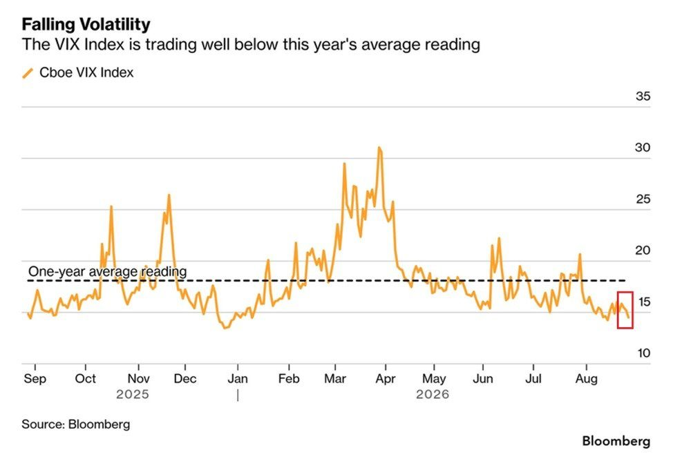
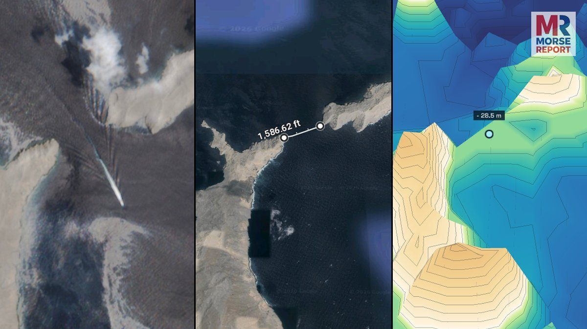
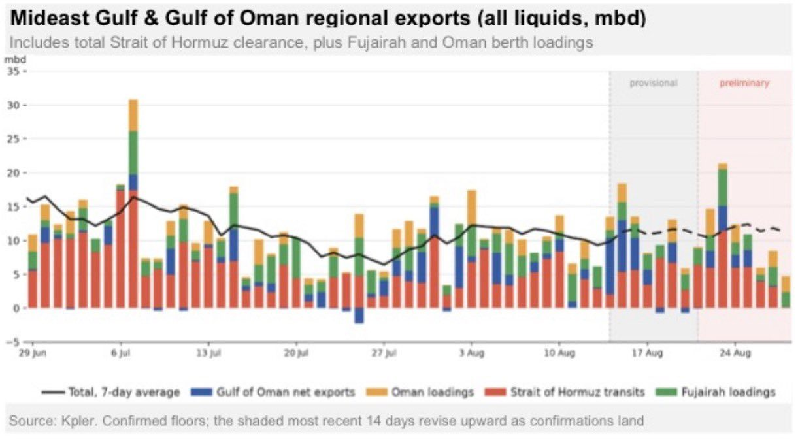
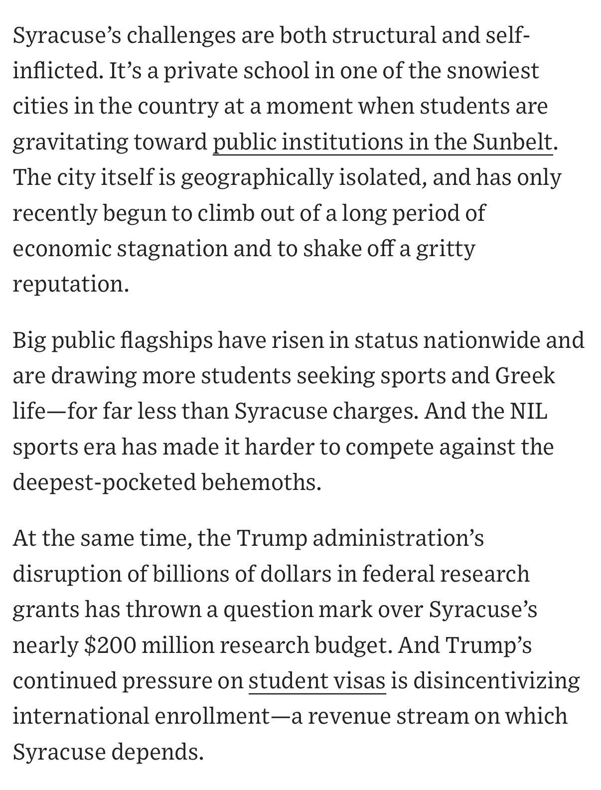

BREAKING: US officials say Iran has launched ballistic missiles at a US airbase in Jordan in retaliation for US attacks on Iran near the Strait of Hormuz just hours ago. This was the first known US strike in Iran since late-July and the IRGC has vowed to retaliate. US oil prices are extending gains on the news.
Weekly Recap:
• US says Chinese hackers breached the Federal Reserve. • Coinbase expands Bitcoin-backed mortgages without selling $BTC or facing margin calls. • Major banks advance plans for a joint stablecoin. • Elon Musk calls Sam Altman "untrustworthy" and accuses him of stealing OpenAI. • Bitcoin posts its biggest weekly gain since March 2023, surging 23%. • Japan to launch instant blockchain settlement for stocks and government bonds. • SEC proposes modernized crypto custody rules. • $13 trillion Charles Schwab to add Solana, Avalanche, and Chainlink trading. • OpenAI says it will achieve AGI this year. • Vivek Ramaswamy's Strive buys 1,100 Bitcoin for $85 million. • UK orders Bank of England to advance stablecoin and digital money innovation. • China threatens retaliation over US sanctions on Iran. • US economy grows 1.5% in Q2. • Bessent could tap nearly $1 trillion for Treasury bond buybacks. • Trump announces historic Venezuela oil deal that could double US reserves. • Elon Musk predicts SpaceX will generate $3.5 trillion in revenue by 2033. • Citadel warns Treasury buybacks could weaken the dollar and fuel inflation. • Trump raises tariffs on Canadian autos, parts, and steel to 50% in 2027. • Ontario threatens to cut US electricity and critical mineral supplies. • Shell CEO warns the oil market is losing its "shock absorber." • US imposes an additional 7.5% tariff on Chinese goods. • Canada declares it is in a trade "war" with the US. • Nvidia $NVDA reports $96.2 billion in Q2 revenue, beating estimates. • Canada announces tariffs of up to 50% on $20 billion of US goods. • Thailand advances rules for spot Bitcoin and Ethereum ETFs. • OpenAI says its new AI chips can outperform Nvidia processors.
The strength of this market is unprecedented.
The S&P 500 has traded for 22 consecutive sessions without a decline of at least -1.0%.
Furthermore, the Volatility Index, $VIX, has closed at or below 16 points for 18 straight trading days.
On Friday, the $VIX finished at 14.4 points, its 2nd-lowest daily close since December 2025.
This is ~20% below its 1-year average of ~18.0 points.
The S&P 500 has now added nearly +$12 trillion in market cap since the March 2026 bottom and stands just ~1.5% below its all-time high.
US stocks have been remarkably resilient.

Treasury Secretary Bessent and Fed Chairman Warsh arrive in Asheville North Carolina to host G20
🚨Recent satellite imagery suggests that the Department of War has conducted a covert dredging operation to open up a never-before-used shipping corridor through the Omani side of the Strait of Hormuz.
The corridor in question is an approximately 1,600-foot-wide waterway with a natural depth of about 93 feet, meaning that only a small amount of dredging would have been necessary to make it safe for VLCCs (Very Large Crude Carriers).
Worth noting, ships navigating this corridor remain completely outside the Iranian regime’s line of sight due to the Omani island of Jazirat Musandam and the curvature of the Earth.
Follow: @MorseReport

Star trails from the ISS! Lots of cool physics to see in these. Stars moving as thin lines in the direction of our orbital path but forming arcs to the left of our velocity vector. Lightning flashes making purple spots into the time history. City lights streak by. A faint red glow is seen as part of our upper atmosphere. Surreal!
The Golden Age of Discovery Has Begun 🇺🇸
Kpler, which for months now has been cited by everyone in the media showing that “no secret tankers exist” has quietly updated their methodology RETROACTIVELY and magically found nearly a billion barrels of oil they missed
Just incredible stuff

Unfuckingbelievable. Kpler was putting out fake/incorrect data. People then claimed "the Strait is closed" based on that data.
They updated it today, said nothing about it, and then suddenly all the tanker traffic reappeared.
Strait is open. Iran lost. Trump won.
Syracuse is in trouble. They borrowed a half billion dollars to build new dorms and now enrollment is sliding.
“The problem with Syracuse is that the school thinks of itself as like an Ivy, but it’s not,” Tavares said.

JUST IN: 🇺🇸🇷🇺 US proposes setting up meeting between President Trump, Russian President Putin and Ukrainian President Zelensky, Axios reports.
"Feminist icon" NY Governor Hochul just put on a hijab for Muslim men
Europe is beating the war drums because the EU is in dire straits. You’re seeing stress between the members. Italy is saying they don’t want to see any more money going to Ukraine.
The EU is now fighting for power, their power to retain over Europe. It’s the EU that needs the war with Russia. You need unity to retain power. This is an old formula.
JUST IN: 🇮🇸 Iceland rejects proposal to restart talks on joining the European Union.
Consensus estimate is that ~15GW of AI compute produced in 2027 cannot be turned on in 2027.
This is harder than just finding power, as you also need to build out all the transformers, wiring, liquid-cooling, (massive) chillers & complex networking. https://grok.com/share/bGVnYWN5_4f06d401-90e9-4ed4-bad8-89e3b4fadde2